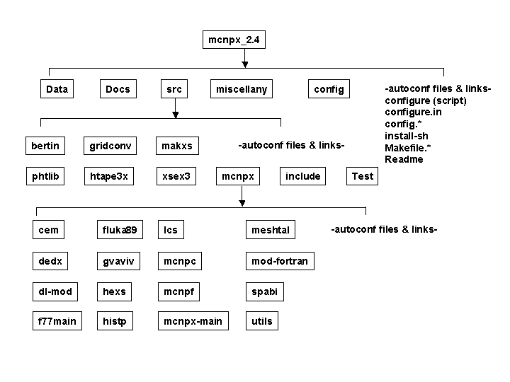

echo $PATHYou may find it useful to set your PATH environment variable to a strategic search order so that the utilities that are found first are the ones you intend to use. Setting of environment variables is done differently depending upon what shell you use. Please consult the appropriate manuals for your shell. Most systems have more than one shell. Any system can have more than one version of any utility. You must know your utilities.
UNIX and Linux Platforms
If you work on a UNIX or Linux operating system you can use the following
inquiry commands to learn if you have more than one make utility:
which make which gmakeMany systems come with a make utility that is provided by the vendor. On UNIX and Linux, you must use the GNU make utility and it must be version 3.76 or later. Sometimes the GNU make utility is installed in an executable file called "gmake". Sometimes system administrators make symbolic links called "make" that when resolved, invoke the "gmake" utility. You can make your own symbolic links in directories that you own and control so that when you execute the "make" command you will be executing the "make" you intend to use. You can also establish an alias in the shell runtime control file whereby any "make" command you issue actually executes "gmake." You can also substitute the "gmake" command everwhere you see the "make" command in the examples that follow.
The important point of this discussion is to know your "make" and use the right one, otherwise, this automated build system can fail.
If no "make" or "gmake" is found, you either have a PATH value problem, or you need some help from your system administrator to install GNU make.
If both "make" and "gmake" exist, query each of them to see what version you have.
make --version gmake --versionSome vendor supplied "make" utilities do not understand the "--version" option that requests that the version number be printed. If you see an error or usage message, then your "make" is one of the vendor-supplied variety. Make sure you have GNU make version 3.76 or later installed and that it is found in your search path first. You may use an alias command to map the make command to gmake or remember to type "gmake" instead of "make" when you build mcnpx.
Windows Platform
See the mcnpx_2.4.0/Readme.w32 text file for software requirements
and instructions on building under Windows using a GNU Windows based make
utility. The build procedure will expand the Win32.exe binary file
to the mcnpx_2.4.0 source tree. The Compaq Visual Fortran compiler Version
6.1 or 6.6 and Microsoft C++ 6.0 compilerse are required to compile under
Windows. If you do not have these compilers, you may use the distributed
executables as described later in this file under User's Notes.
A hierarchy of special autoconf-generated configure scripts distributed with mcnpx version 2.4 will examine your computing environment, adjust the necessary parameters, then generate a set of Makefiles in your chosen build directory that matches your particular computing environment. Currently we are using the autoconf structure to support the use of individual feature tests to generate a correct configure script for a variety of hardware, operating system, and compiler combinations.
Each autoconf generated configure script will search for GNU compilers first before attempting to locate any other compiler present on your computing environment. Please be aware of exactly how many Fortran and C compilers exist in your computing environment. With this FORTRAN 90 release it will be necessary to specify which Fortran and C compiler should be used. You have that power via options given to the configure script. See the --with-FC and --with-CC options later in this document.
The recommended configure commands for the systems that we tested are shown below:
| Platform | Recommended Configure Command |
| Sun-Solaris | ./configure --with-FC=f90 --with-CC=cc |
| Intel-Linux | ./configure --with-FC=pgf90 --with-CC=pgcc |
| Alpha-Tru64 | ./configure --with-FC=f90 --with-CC=cc |
| SGI-IRIX | ./configure --with-FC=f90 --with-CC=cc |
| HP-HPUX | ./configure --with-FC=f90 --with-CC=cc |
| IBM-AIX | ./configure --with-FC=xlf --with-CC=cc |
Rather than having only one Build directory of past distributions, it is now possible to create as many Build directories as desired, anywhere one wants, named anything one wants. Through the use of options supplied to the configure script, one can vary the resulting generated Makefiles to match a desired configuration.
Most software packages that use autoconf have a basic unpack, build, and install procedure that looks like this:
gzip -dc PACKAGE.tar.gz | tar xf - cd PACKAGE ./configure make installThis method of installation works with mcnpx. However, the development team recommends a slightly different method so as not to clutter the original source tree with all the products of compiling and building.
More complex packages (The GNU C compiler suite, gcc comes to mind) warn that the simple build procedure given above is a dangerous practice, as it clutters the original source tree with generated Makefiles and compiled objects, and makes it difficult to support multiple builds with different options. They suggest using a different, initially empty directory to be the target of the configure process.
gzip -dc PACKAGE.tar.gz | tar xf - mkdir Build cd Build PATH_OF_PACKAGE-SOURCE/configure make installThe mcnpx team also makes this suggestion. Please use an empty directory somewhere other than the source distribution's location as the target of the build. It keeps the source tree clean and allows multiple builds with different options. Even if you think that you will never need additional builds, it costs nothing to have the flexibility in the future.
The following example uses bourne shell commands that follow accomplish this task. If you are more familier with csh, you will need to adjust things approprietly. NOTE: Comments about the shell commands start with the '#' character. Also, don't be alarmed by the generous amount of output from the configure and make scripts. They work hard so you don't have to.
# go to the installation directory cd /usr/local/src # Unpack the distribution. This creates the directory mcnpx_2.4.0 gzip -dc mcnpx_2.4.0.tar.gz | tar xf - # go to /tmp and make the build directory cd /tmp mkdir mcnpx # go into that working space cd mcnpx # execute the configure script to generate the set of Makefiles # remember to specify the use of the f90 and cc compilers # the default directory prefix is /usr/local /usr/local/src/mcnpx_2.4.0/configure --with-FC=f90 --with-CC=cc # now make the executable mcnpx program and supporting LCS libraries make all # run the regression tests for your architecture make tests # install the executables and libraries in /usr/local make install # clean up. The build products are no longer needed. cd /tmp rm -rf mcnpx
When the user wants to use the normal mcnpx directory layout of
.../bin for executables and .../lib for data filesbut does not wish to use the default directory /usr/local, then the previous example can be adjusted with additional options. In the previous example, the configure script could be given the option
/usr/local/src/mcnpx_2.4.0/configure --with-FC=f90 --with-CC=cc --prefix=/usr/mcnpxand the make install process would install the mcnpx binary in /usr/mcnpx/bin and the data files in /usr/mcnpx/lib. The code will use /usr/mcnpx/lib as its default location for finding the data files.
When the user has an existing directory layout that does not follow the mcnpx default, then the data path itself can be customized like this:
/usr/local/src/mcnpx_2.4.0/configure --with-FC=f90 --with-CC=cc --libdir=/usr/mcnpxwhich will leave the default executable location as /usr/local/bin and set the location for the data files to /usr/mcnpx.
Finally, both the --prefix and the --libdir options can be used together with the --libdir options taking precedence over the library directory implied by the --prefix.
These options should remove the need to edit paths in the source code. In fact, with support for these options, there are no longer any paths in the code to edit.
The following example uses bourne shell commands that follow accomplish this task. If you are more familier with csh, you will need to adjust things appropriately. NOTE: Comments about the shell commands start with the '#' character. Also, don't be alarmed by the generous amount of output from the configure and make scripts. They work hard so you don't have to.
# go to your user home directory cd /home/me/ # unpack the distribution that was copied from the net or a CDROM. # This creates /home/me/mcnpx_2.4.0 gzip -dc mcnpx_2.4.0.tar.gz | tar xf - # go into the unpacked distribution. cd mcnpx_2.4.0 # execute the configure script # remember to specify the use of the f90 and cc compilers # the --prefix tells where to put the executables and libraries. ./configure --with-FC=f90 --with-CC=cc --prefix=/home/me # Make the executable mcnpx program, the bertin and pht libraries, # and run the regresison tests make all; make tests # now install the executable mcnpx program and the bertin # and pht libraries in /home/me/bin and /home/me/lib/mcnpx make install
The local user building the private copy is again username me whose home directory is the directory /home/me. The user has fetched the distribution from CDROM or from the net and has it in the file /home/me/mcnpx_2.4.0.tar.gz. The user will unload the distributation package into /home/me/mcnpx_2.4.0. (With this method, the source can be anywhere as long as the user has the pathname to it.) The user will build the system in the local directory /home/me/mcnpx, install the binary executable in /home/me/bin, and install the binary data files (and eventually the mcnp cross sections) in /home/me/lib.
The following example uses bourne shell commands that follow accomplish this task. If you are more familier with csh, you will need to adjust things approprietly. NOTE: Comments about the shell commands start with the '#' character. Also, don't be alarmed by the generous amount of output from the configure and make scripts. They work hard so you don't have to.
# go to your user home directory cd /home/me/ # unpack the distribution that was copied from the net or a CDROM. # This creates /home/me/mcnpx_2.4.0 gzip -dc mcnpx_2.4.0.tar.gz | tar xf - # make a local directory for a build directory. Call it "mcnpx". mkdir mcnpx # go into that new empty working space cd mcnpx # execute the configure script # remember to specify the use of the f90 and cc compilers # the --prefix tells where to put the executables and libraries. ../mcnpx_2.4.0/configure --with-FC=f90 --with-CC=cc --prefix=/home/me # now make the executable mcnpx program and the bertin and pht libraries, # run the tests, # and install in /home/me/bin and /home/me/lib make all tests install
To add a bit more complexity, assume for this example that we are building and running on a Sun Solaris system that has both the GNU g77 Fortran compiler and the vendor's commercial Fortran and C compilers installed. Systems such as Sun's Solaris and HP's HP-UX normally do not include development compilers. These compilers are usually purchased as additional items. Versions of the GNU compilers are available on the net for such systems. Thus, such systems may have the GNU compilers, the Vendor's commercial compilers, or both installed. In the previous example, the GNU g77 compiler would have been used because if it exists, g77 will be found first when searching for Fortran compilers on your system. If your system has only f77, it will be found and used. We decide to specify the Sun f77 and cc compilers over the GNU g77 and gcc compilers for this build. The --with-LD flag may be needed in such a case because a full installation of the GNU compiler tools can also include a GNU version of the "ld" link editor. Unfortunatly, the different "ld" commands take command-line arguments whose syntax differs between the two systems. As far as is known, this ONLY affects certain experimantal uses of MCNPX and should not be needed by normal users. It is shown in this example as a sample of how it is used in the few cases where it is needed.
# go to your user home directory cd # set an environment variable that identifies where the distribution lives. # This isn't really necessary, but cuts down on typing later. MCNPX_DIST=/usr/local/src/mcnpx_2.4.0 export MCNPX_DIST # make a working space that reminds you it's a debug version mkdir mcnpx-debug cd mcnpx-debug # execute the configure script - request debug for the Makefiles, # remember to specify the use of the f90 and cc compilers # also specify where to put the installed code and which compilers to use. $MCNPX_DIST/configure --with-FC=f90 --with-CC=cc --with-LD=/usr/ccs/bin/ld --with-DEBUG --prefix=/home/me --libdir=/usr/mcnpx/data # now make the executable mcnpx program. # We will omit the regression tests this time, although it would be a good # idea to run them again if different compiler optimization values are used. make installThat's all there is to it! There are many other options available with this new version of mcnpx. Please read the User's Notes or the Programmer's Notes for more details.

Each of the levels contains a collection of autoconf files and links. Removal of any of these files or links will break the automated configure and make capabilities.
First Level:
Data - contains data used with the bertin, phtlib, makxs targets
Docs - contains files describing this mcnpx distribution
Test - contains the regression test files for the various known platforms
in use
src - contains the source code files for mcnpx and several related
utilities
miscellany - contains things that don't fit into any other category,
of interest to developers
config - contains autoconf-related macros, scripts, initialization
files
Second Level:
bertin - builds and executes a program (hcnv) to translate LAHET text
input to binary input
phtlib - builds and executes a program (trx) to translate LAHET text
input to binary input
gridconv - converts output files generated by mesh tally and mctal
files into a variety of different graphics formats
htape3x - reads the history tapes (optionally generated by mcnpx) and
performs post-processing on them
makxs - a cross-section library management tool that converts type
1 cross-sections to type 2 cross-sections and vice versa
xsex3 - a utility associated with the new cross-section generation
mode for mcnpx which allows tabulation of cross-section sets based on physics
models
include - contains include files shared across directories and include
files localized in subdirectories
mcnpx - the organizing root directory for the mcnpx program
Third Level:
cem, dedx, etc. - directories that organize the Fortran and C source
code files that are related to different aspects of the mcnpx program
Fourth Level:
individual Fortran and C source code files for a particular aspect
of mcnpx
The following options are available for use as parameters to the configure script for mcnpx 2.4.0
| Option Syntax | Effect on the generated Makefile if requested | Effect on the generated Makefile if NOT requested |
| --with-STATIC | linking of the compiled files results in a static archive (mcnpx.a) | STATIC is the default - cannot be used at the same time as --with-SHARED (future development) |
| --with-DEBUG | a debug switch appears in the compile step for the generated Makefiles | no debug switch appears in the compile step for the generated Makefiles - this option can be used in combination with other options such as --with-FC and --with-CC |
| --with-FC=value (substitute the desired Fortran compiler name for the value placeholder, e.g., --with-FC=pgf90 to use the pgf90 compiler) | value will be used to compile Fortran source code - location of binary directory containing value must be in your $PATH environment variable | configure will search for a Fortran compiler and use the first one it finds - this option can be used in combination with other options such as --with-DEBUG and --with-CC |
| --with-CC=value (substitute the desired C compiler name for the value placeholder, e.g., --with-CC=pgcc to use the pgcc compiler) | value will be used to compile C source code - location of binary directory containing value must be in your $PATH environment variable | configure will search for a C compiler and use the first one it finds - this option can be used in combination with other options such as --with-DEBUG and --with-FC |
| --with-LD=value (substitute the desired link editor for the value placeholder, e.g., --with-LD=/usr/ccs/bin/ld to use the Standard Sun linker) | value will be used to link object code - Unlike the --with-FC and --with-CC options, whose names are used for more than just finding the executable, The value can be a full path to the location of the desired ld program as well as being a single name like "ld". | configure will search for a linker and use the first one it finds. This is typically needed on systems with both a vendor-supplied compiler set and the GNU tool set. In such cases there may be two versions of "ld" that must be differentiated. - this option can be used in combination with other options such as --with-DEBUG and --with-FC |
| --prefix=value (substitute a full path name for the value placeholder, e.g., /home/team/mcnpx) (the path given should be different from the working directory where the build is taking place) | value will be used in the install step to create bin and lib data directories for mcnpx's use | a default value of /usr/local is used as the full path name for the install step. Executables then go to /usr/local/bin and data files go to /usr/local/lib. (permissions of the destination may prohibit success of installation) |
| --libdir=value (substitute a full path name for the value placeholder, e.g., /home/team/mcnpx) (the path given should be different from the working directory where the build is taking place) | value will be used in the install step to create a library data directory for mcnpx's use | a default value of /usr/local/lib is used as the full path name for the install step (permissions of the destination may prohibit success of installation). This value overides the library portion of the --prefix if both are given. |
| --with-no_paw or --with-no_paw=yes | this means that the symbol NO_PAW will be defined for compilation and actions are taken in the source to omit PAW capabilities when compiling | if omitted, the default behavior is system dependent - if the detected hardware/software platform can handle PAW it's included |
| --with-no_paw=no | this means that the symbol NO_PAW will not be defined and actions are taken in the source to include PAW capabilities when compiling | if omitted, the default behavior is system dependent - if the detected hardware/software platform can handle PAW it's included |
| --with-paw or --with-paw=yes | this means that the symbol NO_PAW will not be defined and actions are taken in the source to include PAW capabilities when compiling | if omitted, the default behavior is system dependent - if the detected hardware/software platform can handle PAW it's included |
| --with-paw=no | this means that the symbol NO_PAW will be defined for compilation and actions are taken in the source to omit PAW capabilities when compiling | if omitted, the default behavior is system dependent - if the detected hardware/software platform can handle PAW it's included |
| --with-FFLAGS=value
There is a separate variable that is used for optimization switches. See --with-FOPT in this table. If in doubt, run the configure script and examine the system default or system computed values that appear in the generated Makefile.h. You may want to include the defaults in the string you specify for FFLAGS with this mechanism when configure is run again. |
substitute a quoted or double quoted string for value that represents allowable compiler switch settings - these settings will override the system default or system computed values | if omitted, the default behavior is system dependent - the detected hardware/software platform and compilers determine what the default FFLAGS should be |
| --with-CFLAGS=value
There is a separate variable that is used for optimization switches. See --with-COPT in this table. If in doubt, run the configure script and examine the system default or system computed values that appear in the generated Makefile.h. You may want to include the defaults in the string you specify for CFLAGS with this mechanism when configure is run again. |
substitute a quoted or double quoted string for value that represents allowable compiler switch settings - these settings will override the system default or system computed values | if omitted, the default behavior is system dependent - the detected hardware/software platform and compilers determine what the default CFLAGS should be |
| --with-FOPT=value
There is a separate variable that is used for non-optimization switches. See --with-FFLAGS in this table. If in doubt, run the configure script and examine the system default or system computed values that appear in the generated Makefile.h. You may want to include the defaults in the string you specify for FOPT with this mechanism. FOPT settings are always appended to FFLAGS settings when configure is run again. |
substitute a quoted or double quoted string for value that represents allowable compiler optimization switch settings - these settings will override the system default or system computed values | if omitted, the default behavior is system dependent - the detected hardware/software platform and compilers and the configure script determine what the default FOPT should be |
| --with-COPT=value
There is a separate variable that is used for non-optimization switches. See --with-CFLAGS in this table. If in doubt, run the configure script and examine the system default or system computed values that appear in the generated Makefile.h. You may want to include the defaults in the string you specify for COPT with this mechanism. COPT settings are always appended to CFLAGS settings when configure is run again. |
substitute a quoted or double quoted string for value that represents allowable compiler optimization switch settings - these settings will override the system default or system computed values | if omitted, the default behavior is system dependent - the detected hardware/software platform and compilers and the configure script determine what the default COPT should be |
If Fortran and C compilers exist on your system and if they appear in your path, the Test Makefile will attempt to compile and generate a new MCNPX executable which will overwrite the one you copy in step #3 below. There are two options to overcome this: (a) remove the F90 and C compilers from your PATH and follow the instructions as given below; or (b) void the "required" and "ht-req" targets from the src/Test Makefile so these other components won't be built. This involves removing all the kewords after "required:" (~line 179) and after "ht-req:" (~line 434) in src/Test/Makefile.
Assume the MCNPX 2.4.0 source is located in a directory called mcnpx_2.4.0.
Step 1. Run the "testonly" script
(Skip this step on PC Windows as the configure script on that platform
always creates the proper build tree):
cd mcnpx_2.4.0
./testonly
This will insert a command into each "configure" script to allow execution even without compilers. It will copy all the original "configure" scripts into "configure.org" scripts. If anyone decides to install a compiler and actually build MCNPX after doing this, it is suggested that they start with a clean copy of the source tree.
Step 2. Make a build directory and execute "configure".
cd ..
mkdir mcnpx_bld
cd mcnpx_bld
../mcnpx_2.4.0/configure --prefix=/home/UID/mcnpx_bld --with-FC=f90
--with-CC=cc (Unix)
or
..\mcnpx_2.4.0\configure
(Windows)
Note that the "--with-FC" and "--with-CC" options are still required on Unix platforms as they will point to the correct test suite templates. See the names of the folders in mcnpx_2.4.0/src/Test for the various options (e.g., folder Test.sgi.irix.f90.cc corresponds to --with-FC=f90 and --with-CC=cc). On Unix platforms, these configure scripts will generate numerous errors, but they should complete and produce the build directory tree.
Step 3. Copy the binary data files (bertin, phtlib) and executables
(mcnpx, htape3x, xsex3) into the build tree:
Check the mcnpx_2.4.0/exe directory for the string to substitute for "SGI"
if you are running on another system.
Execute the following copy commands from the directory in which you configured
in Step 2.
cp ../mcnpx_2.4.0/exe/SGI/data/bertin src/bertin
(Unix)
cp ../mcnpx_2.4.0/exe/SGI/data/phtlib src/phtlib
cp ../mcnpx_2.4.0/exe/SGI/bin/mcnpx src/mcnpx
cp ../mcnpx_2.4.0/exe/SGI/bin/htape3x src/htape3x
cp ../mcnpx_2.4.0/exe/SGI/bin/xsex3 src/xsex3
copy ..\mcnpx_2.4.0\exe\Windows\data\bertin
(Windows)
copy ..\mcnpx_2.4.0\exe\Windows\data\phtlib
copy ..\mcnpx_2.4.0\exe\Windows\bin\mcnpx.exe
copy ..\mcnpx_2.4.0\exe\Windows\bin\htape3x.exe
copy ..\mcnpx_2.4.0\exe\Windows\bin\xsex3.exe
This Unix example assumes an SGI platform and that the RSICC distribution includes these files in mcnpx_2.4.0/exe/SGI. Similarly for the Windows example with the files in mcnpx_2.4.0\exe\Windows. Check the distribution source tree to ensure these paths are correct.
Step 4. Run the test problems in the build tree:
cd src
cd Test
make -i
(must use GNU make)
Note make is run with the "-i" option to ignore errors. This is necessary
as it will try to build some of the MCNPX components before executing the
test problems. At some point, it will copy the needed templates and files
from the source tree and begin executing the test problems. Upon completion,
one should check that the "diff" output files are 0 length (especially
the difm??, difsm??, and difmt?? files).
config directory
| aclocal.m4 | a file containing all of the macro definitions found in the configure.in files |
| checks.m4 | a file that is included in aclocal.m4, it checks for the required version of gnu make and exits with instructions if not found |
| configure.generic.in | a shared file used to generate configure scripts for the last level of the file tree |
| install-sh | a script that aids the installation of generated results |
| Makefile.h.in | a shared header file template for the Makefile that all of the levels will use |
| config.guess | a script that aids recognition of computing environments when configure is run |
| config.sub | a script that aids validation and canonicalization of a computing environments when configure is run |
First, Second, and Third Level directories all contain special configure.in files that propagate the automated configuration down to the next levels. Most of the Fourth Level directories share the configure.generic.in file in the config directory because there is no further propagation. A few Fourth Level directories require their own customized configure.in.
Each of the levels (1-4) also contain a special Makefile.in and Makefile.h.in files. When the configure script runs, Makefile.h is generated, then the Makefile is generated. The first line of each Makefile includes Makefile.h.
If you make changes to any of the input files or macros, it will be necessary to regenerate the configure script so it can pick up all of the changes you have made to the component files. To regenerate the configure scripts, use the following command from the Top Level directory:
autoreconf --localdir=./config -f
This forces regeneration of the configure scripts that live at each directory level of the distribution.
The --localdir=./config parameter lets autoconf know where to find the macros that are called in the various configure.in files it encounters.
For hardware and operating system, study the case statements in the mcnpx_2.4.0/config/config.guess and mcnpx_2.4.0/config/config.sub files. You may need to insert a new case to handle your variation of hardware and operating system versions. Luckily, most of the current platforms are already specified, therefore it is unlikely that you would have to edit either of these files.
For the most recent version of autoconf, check with the GNU autoconf distributions. There may be a more recent version of autoconf's config.guess/config.sub scripts that cover your configuration if it is not present in the MCNPX distribution.
Check the config.guess file to see if all Intel hardware platforms running Linux are specified. Several 'uname' commands at the beginning of the script set up four recognition factors that are concatenated with ':' between them (much like the setting of the PATH environment variable in some shell scripts). This concatenation of the machine, release, system, and version variables is then used in a long case statement when detecting computing platforms.
Around line 336 (in the current copy as this is being written) the *:Linux:*:*) case recognizes any hardware platform (not already recognized by previous cases) that run the Linux OS. Thus, no modifications are needed to config.guess.
Check the config.sub file to see if all Intel hardware platforms running Linux are handled in the various case statement that handle the pieces of interest. This script tries to construct and return a string that is the concatenation of cpu type, manufacturer, and operating system with the '-' character between them. Again, it is unlikely that you would have to modify this file, as most current combinations are handled. Check each of the case statements that use i[3,4,5,6] and *linux* to see if you have something different than what is specified.
For specifying a compiler in use, the mcnpx_2.4.0/config/aclocal.m4 macro definition file and the various configure.in files will be needed.
The configure.in files determine the order in which the macros in the aclocal.m4 file are activated. The order of the macro calls is very important, as some macros assume that prior work has been done. There are configure.in files in the following directories :
The macro definition of AC_SET_ARCH in aclocal.m4 uses the AC_CANONICAL_SYSTEM macro (which in turn uses config.guess and/or config.sub to do its work) to set our ARCH and SYSTEM variables. These variables are then used in combination with the FCOMP and CCOMP variables that specify which Fortran and C compilers to use.
These variables are set from either the user's environment variables FC and CC, with default values, or the --with-FC --with-CC parameters given to configure. See the AC_SET_FC and AC_DFLT_FC macros for FCOMP setting and the AC_SET_CC and AC_DFLT_CC macros for CCOMP setting.
WARNING: You are responsible for assuring that the Fortran and C combination of compilers you specify are compatible. Unrecognized options will be accepted and configuration will continue for as long as is possible.
Another relevant macro called by configure.in and configure.generic.in is the AC_ENV_FLAGS_VARS macro, which uses a variety of feature test macros to achieve the proper settings. Let's step through each one in turn and see what each one does. Then we will decide if we need to make any modifications to any of them.
The AC_SET_TARCH, AC_SET_TSYS, AC_SET_TFC_TCC macros are concerned with setting variables that are used in the generation of file names when the tests are run. They shorten the long canonical names to easily recognized short names. When we examine these we see that "intel" already appears in AC_SET_TARCH, "linux" already appears in AC_SET_TSYS and AC_SET_TFC_TCC simply accepts the FCOMP and CCOMP variable settings (see earlier paragraphs).
The AC_ECHO_CONFIG merely echos to the output stream the detected configuration based on hardware architecture, operating system, and compilers in use. No need to modify this macro for the task at hand.
The AC_PREPROC_SYMBOLS macro defines symbols for preprocessing based on the operating system that was detected. We see that "linux" already appears. If you must have symbols that define a specific hardware vendor architecture or operating system, you can use this macro as a model. We currently do not define any preprocessor symbols that are used in the code to detect and act upon hardware vendor and operating system. This could change in the future.
The AC_FORT_CPP_PARM_WIERDNESS macro exists solely to handle the different ways that parameters can be passed on different systems. At present, only the AIX Fortran compilers need comma seperated values to get parameters passed through the C pre-processor properly. If you are adding a compiler with funky needs, put that parameter passing weirdness here.
The AC_F77_CRAY_PTRS macro currently uses the name of the compiler (quick and dirty) to answer the question "Are CRAY Pointers defined?" A really good implementation of this macro that answers this question more correctly would insert a short Fortran program that uses a CRAY Pointer would invoke the compiler, then check the result. This macro is the site of future work. No modification necessary for our task at hand. This is likely to be removed/replaced in future releases.
The AC_BIT_MODE macro is where we deal with 32 bit versus 64 bit mode. For now the cheap and dirty default of defining the CHEAP symbol is used. This macro is the site of future work. No modification necessary for our task at hand.
The AC_COMP_SPECIFIC macro defines symbols or sets flags based ONLY on the compiler in use. In other words, it doesn't matter what the hardware, operating system, or other compiler happens to be. If there are any symbols or special compiler flags you want as the defaults all the time, this is the place to add them. If your desired flag is not going to be a default value to use every time, use the --with-FFLAGs and --with-CFLAGS parameters to the configure script to experiment with occasional compiler flag settings. We see that the pg* case will match pgf90 and it defines the symbol PGF90.
The AC_OPTIM_DEBUG macro is the place to specify default optimization settings and debug settings for the specific hardware architecture, operating system and compilers in use. We see that the combination of "intel", "linux", and "pgf90" already appears.
The AC_FCOMP_FLAGS and AC_CCOMP_FLAGS macros are the places where compile flags for Fortran and C respectively are specified. Currently there is a reasonable set of default flags in use. Changes made here affect all invocations of the compiler. Comments in AC_FCOMP_FLAGS indicate that there are no special default FFLAG settings required to use the pgf90 compiler. Comments in AC_CCOMP_FLAGS indicate that there are no special default CCFLAG settings required to use the gcc compiler, but check AC_COMP_SPECIFIC to be sure.
The AC_SHARED_LIBRARY_FLAGS is for experimental use with future development and should be used only with extreme caution and intimate knowledge.
WARNING: If you add a new case label, new statements to an existing case label, or change the value of any setting for ANY of these aclocal.m4 macros you must regenerate the configure scripts at all the different levels of the file tree heirarchy by executing the following command from within the mcnpx_2.4.0 directory:
# force regeneration of configure scripts at all levels autoreconf --localdir=./config -fOnce the configure scripts at the various levels have been regenerated, you can execute configure with the desired options that were added. For our example, we would execute the following to use our new pgf90 compiler when we make mcnpx:
# from the top level of your build directory # configure and request that pgf90 be used to compile Fortran /usr/local/src/mcnpx_2.4.0/configure --with-FC=pgf90The configure will recursively descend the necessary tree hierarchy and generate Makefiles at all levels. After successful configuration you can now make mcnpx using your new compiler with the following command:
# from the top level of your build directory make mcnpx
This one requires the use of mcnpx_2.4.0/config/aclocal.m4 and all of the configure.in files (or configure.generic.in) at the various levels:
Decide where the new call to --with-DEBUG should be placed. Since this option is only going to append a string (usually "-g") to the FFLAGS and CFLAGS used in the compile step and the LDFLAGS used in the link step, it could probably be placed anywhere after the initial/default environment settings have been done (AC_CLL_DEFAULTS) and before the enviroment variable adjustments will be made (AC_ENV_FLAGS_VARS) for the detected and requested configuration. We placed it after the call that checks for the specific compilers in use (ignoring the static/shared options for the moment) and before any of the other --with options that define symbols for use in the code compilation.
The first parameter to AC_ARG_WITH is the feature you are looking for, in this case, DEBUG. Next, a descriptive string can be placed inside the quote symbols [ ]. The third parameter is the name of the macro to be executed if --with-DEBUG is given when the configure script is called. There could be fourth parameter (as in the check for the Fortran and C compilers) which is the name of the macro to be executed if the option is not given. We don't want to do anything if the --with-DEBUG option is not specified, so we don't need to supply the fourth parameter.
Go to each of the remaining configure.in files and place the AC_ARG_WITH call for handling --with-DEBUG in the same relative location as you did in the first configure.in file.
Now we need to define the macro that gets executed when the check for --with-DEBUG is made. We called our macro AC_SET_DEBUG. It is important to know that where we check for the presence of the parameter, and where we eventually act on the notice of its presence could be anywhere in the macros found throughout the aclocal.m4 file. In this case, we would like to have a local variable set indicating that the option is present, then later, act on that knowledge.
In aclocal.m4 our macro definition of AC_SET_DEBUG uses the special variable ${withval} that was set by the AC_ARG_WITH check for the presence of the option. If the option is present ( = yes ), then we set a local script variable, ac_debug, to yes. For completeness, we define that local variable with a default value of 'no' in the AC_CLL_DEFAULTS macro. This gives the variable a value even if the option was not used. Later, in a more strategic place in the code, we will test $ac_debug and do something appropriate.
In our case we put the code that acts upon the knowledge that debug is requested inside the AC_OPTIM_DEBUG macro that handles the setting of variables for debug and optimization requests. Three special debug variables are set (FDEBUG, CDEBUG, LDDEBUG) and checks are made for optimization settings. Then later in the AC_APPEND_DEBUGS macro, these special debug variable values are appended to the flag variables (FFLAGS, CFLAGS, LDFLAGS)
After saving all of the changed files, you must regenerate the configure scripts by executing the following command from within the mcnpx_2.4.0 directory:
# force regeneration of configure scripts at all levels autoreconf --localdir=./config -fOnce the configure scripts at the various levels have been generated, you can execute configure with the desired feature that were added. For our example, we would execute the following to use our new --with-DEBUG option in order to get a debuggable version of the code built.
# from the top level of your working directory # configure and request that the new option be used # remember to specify which compilers to use configure --with-FC=f90 --with-CC=cc --with-DEBUGThe configure will recursively descend the necessary tree hierarchy and generate Makefiles at all levels. After successful configuration you can now make mcnpx using your new compiler with the following command
# from the top level of your working directory make mcnpx
If graphics are desired, an X-Server is required. Several
flavors can be found on the internet (e.g., X-Deep/32, WRQ Reflection X,
Exceed, etc.). The mcnpx_2.4.0/README.w32 text file contains information
on downloading and customizing for Windows. The x11.dll binary file
is included for Windows users and will be expanded by the build procedure
from mcnpx_2.4.0/Win32.exe. X11 is generally included on Unix
and Linux systems.
If you are a casual user and do not perform any software development for MCNPX capabilities, you must have the GNU make utility, version 3.76 or greater. See your system administrator if GNU make does not exist on your computing platform.
If you are a software developer for MCNPX capabilities or you wish to alter the way the autoconf generation of the configure script works, you will need the following software:
| Platform/Compiler | Result |
| Sun-Solaris/WorkShop Fortran Compilers 6, update 2 (Fortran 95 6.2) | builds, no tracking differences |
| SGI-IRIX/MIPSpro Compilers: Version 7.30 | 64 bit IRIX builds, no tracking differences
32 bit IRIX builds, core dumps executing problem 43 |
| HP-HPUX/HP F90 v2.4.10 | builds, no tracking differences |
| IBM-AIX/xlf90 Version 7 Release 1 | builds, no tracking differences |
| Alpha-Tru64(OSF1 V5.0)/Compaq Fortran V5.3-915 | builds, no tracking differences |
| Intel-Linux/pgf90 3.2-3 | builds, no tracking differences |
Users may provide the --with-FOPT=VALUE option when running the configure
script to experiment with different levels of optimization on any platform.
The defaults we have chosen allow the mcnpx executable program to be built
successfully on each platform. We make no guarantees beyond the platforms
that are documented here. .
| Platform/Compiler | Default Fortran 90 Optimization used by configure |
| Sun-Solaris/WorkShop Fortran Compilers 6, update 2 (Fortran 95 6.2) | -O3 |
| SGI-IRIX/MIPSpro Compilers: Version 7.30 | (64 bit IRIX) -O -OPT:Olimit=0
(32 bit IRIX) no explicit optimization specified |
| HP-HPUX/HP F90 v2.4.10 | +O0 |
| IBM-AIX/xlf90 Version 7 Release 1 | -O2 |
| Alpha-Tru64(OSF1 V5.0)/Compaq Fortran V5.3-915 | -O0 |
| Intel-Linux/pgf90 3.2-3 | -O0 |
| Subdirectory | Contents |
| bin | mcnpx, gridconv, makxs, htape3x, xsex3 |
| lib | barpol.dat, phtlib, bertin |